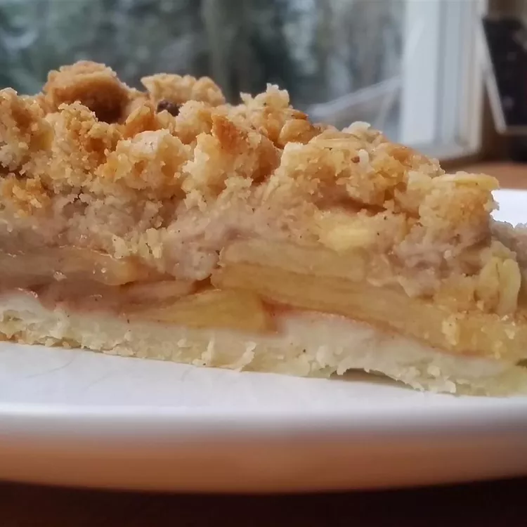

Apple Pie recipe

Description
Very special Applie Pie that you must eat right after preparing!
or face the wrath of Eldritch Beings...
Ingredients
for apple pie itself:
- 5 cups apples - peeled, cored and sliced
- 2/3 cup of white sugar
- 2 tablespoons all-purpose flour
- 1/2 teaspoon ground cinnamon
- 1/4 teaspoon ground nutmeg
- 1/4 teaspoon ground allspice
- 1 frozen pie crust
- 2 tablespoons of butter
- aluminum foil
for streusel topping
- 3/4 cup all-purpose flour
- 3/4 cup rolled oats
- 1/2 cup packed brown sugar
- 1 teaspoon lemon zest
- 1/2 teaspoon ground cinnamon
- 1/2 cup butter
Steps
- Preheat the oven to about 220 degrees C.
- Make the apple pie: slice apples, place them in a bowl.
Mix white sugar, flour, cinnamon, nutmeg and allspice together in a separate bowl until combined.
Sprinkle it over apples and toss until evenly coated.
- Remove the pie shell from freezer; pour apple mixture into pie shell and dot with butter.
Lay a sheet of aluminum foil lightly on top of filling, but do not seal.
- Bake pie in an oven. Takes about 10 minutes.
- Now make streusel topping:
mix flour, oats, brown sugar, lemon zest and cinammon in a medium bowl until combined.
Cut in the butter until mixture is crumbly.
Remove pie from oven and sprinkle streusel on top.
- Reduce heat to 190 degrees C.
Return pie to oven and bake until streusel is browned and apples are tender, 30 to 35 minutes more.
Cover loosely with aluminum foil to prevent excessive browning.